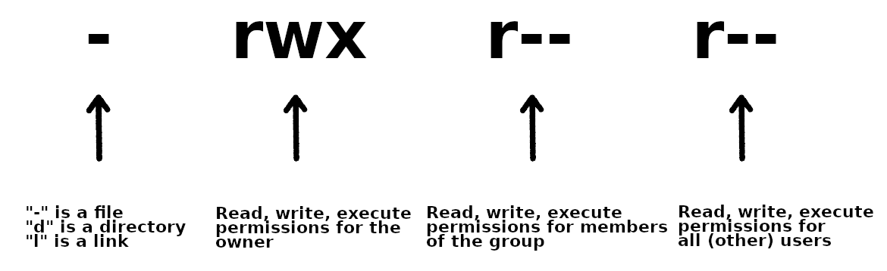

Permissions and owner¶
These commands could be needed for scripting, particularly the chmod command.
Permissions are needed to, among other things, make a file executable. This is done with chmod. The command chown is used to set the owner of a file or folder.
chmod¶
The command chmod is used to change permissions for files and directories.
There are three types of permission groups
- owners: these permissions will only apply to owners and will not affect other groups.
- groups: you can assign a group of users specific permissions, which will only impact users within the group. The members of your storage directory belongs here.
- all users: these permissions will apply to all users, so be careful with this.
There are three kinds of file permissions
- Read (r): This allows a user or a group to view a file (and so also to copy it).
- Write (w): This permits the user to write or modify a file or directory.
- Execute (x): A user or a group with execute permissions can execute a file. They can also view a subdirectory.
The permissions for a file, directory, or symbolic link has 10 “bits” and looks similar to this:

As shown, the first bit can be “-” (a file), “d” (a directory), or “l” (a link).
The following group of 3 bits are for the owner, then the next 3 for the group, and then the last 3 for all users. Each can have the r(ead), w(rite), and (e)x(ecute) permission set.
To change permissions, here are some examples
- owner
- chmod +rwx FILE/DIR to add all permissions of a file with name FILE or a directory with name DIR
- chmod -rwx FILE/DIR to remove all permissions from a file with name FILE or a directory with name DIR
- chmod +x FILE to add executable permissions
- chmod -wx FILE to remove write and executable permissions
- group
- chmod g+rwx FILE to add all permissions to FILE
- chmod g-rwx FILE to remove all permissions to FILE
- chmod g+wx FILE to give write and execute permissions to FILE
- chmod g-x FILE to remove execute permissions to FILE
- others
- chmod o+rwx FILE to add all permissions to FILE
- chmod o-rwx FILE to remove all permissions to FILE
- chmod o+w FILE to add write permissions to FILE
- chmod o-rwx DIR to remove all permissions to DIR
- all
- chmod ugo+rwx FILE/DIR to add all permissions for all users (owner, group, others) to file named FILE or directory named DIR
- chmod a=rwx FILE/DIR same as above
- chmod a=r DIR give read permissions to all for DIR
chown¶
To change ownership of a file or directory, use the command chown.
Examples
- chown USERNAME FILE the user with USERNAME becomes the new owner of FILE
- chown USERNAME DIRECTORY the user with USERNAME becomes the new owner of DIRECTORY (but not any subdirectories)
- chown USERNAME:folk DIRECTORY the user ownership is changed to USER and the group ownership to group “folk” for the directory DIRECTORY
- chown :folk DIRECTORY the group ownership is changed to the group “folk” for the directory DIRECTORY
- chown -R USERNAME:folk DIRECTORY the user ownership is changed to USERNAME and the group ownership is changed to group “folk” for the directory DIRECTORY and all subdirectories
Warning
As default, chown does not generate output on success and returns zero.